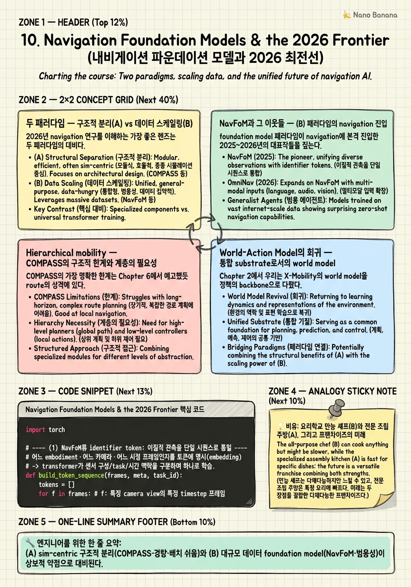

Navigation Foundation Models & the 2026 Frontier

🎯 학습 목표
- NavFoM류 foundation model과 COMPASS류 구조적 접근의 장단점을 비교한다
- hierarchical mobility(graph route planner + local policy)의 필요성을 안다
- world model이 통합 substrate로 회귀하는 2026 흐름을 설명한다
- 'foundation model base + residual 보정' 하이브리드 미래를 논증할 수 있다
- 이 분야의 핵심 미해결 문제 4가지를 정리해 연구 방향을 제안할 수 있다
이 강의의 마지막 챕터다. 지금까지 우리는 COMPASS라는 하나의 시스템을 해부했다 — 문제 정의(Ch1), world model(Ch2), IL과 covariate shift(Ch3), residual RL(Ch4), distillation(Ch5), 전체 아키텍처(Ch6), embodiment conditioning(Ch7), generative policy(Ch8), sim-to-real(Ch9). 이제 시선을 들어, COMPASS가 놓인 더 큰 지형 — 2026년 navigation 연구의 최전선 — 을 조망한다.
2026년의 navigation 연구는 두 패러다임의 긴장으로 요약된다. 하나는 COMPASS가 대표하는 (A) sim-centric 구조적 분리 — mobility를 IL/RL/distillation으로 명시적으로 분해하고 sim 데이터로 해결해, 가볍고 배치하기 쉬운 시스템을 만든다. 다른 하나는 (B) 대규모 데이터 foundation model — 수백만 궤적을 삼켜 하나의 범용 정책으로 만들어, task-specific 튜닝 없이 다양한 embodiment·task를 커버한다. NavFoM(800만 샘플)이 (B)의 navigation 본격 진입을 알린 신호탄이다.
이 챕터의 논지는 두 패러다임이 대립이 아니라 수렴한다는 것이다. foundation model은 강력하지만 특정 로봇·환경에 대한 물리적 정밀함이 부족하고, 구조적 분리는 정밀하지만 범용성이 부족하다. 미래는 'foundation model base + residual RL 보정' — 넓은 prior 위에 embodiment별 정밀 보정을 얹는 하이브리드다. NVIDIA가 COMPASS를 GR00T N의 synthetic data 생성기로 두는 것이 이 수렴의 전조다. 마지막으로 우리는 이 분야의 4대 미해결 문제를 정리하며, 여러분이 논문을 쓸 다음 좌표를 제시하고 강의를 닫는다.
핵심 내용
두 패러다임 — 구조적 분리(A) vs 데이터 스케일링(B)
2026년 navigation 연구를 이해하는 가장 좋은 렌즈는 두 패러다임의 대비다. 이 대비를 정확히 잡으면 새 논문이 나올 때마다 그것이 어느 진영이고 무엇을 트레이드오프하는지 즉시 읽을 수 있다.
(A) sim-centric 구조적 분리. COMPASS가 전형이다. mobility를 명시적 모듈(world model + IL prior + residual RL + distillation)로 분해하고, 각 모듈을 sim 데이터로 학습한다. 강점은 경량성·배치 용이성·해석가능성이다 — Chapter 9에서 본 30ms/422MB 엣지 배치가 이 패러다임의 열매다. 각 모듈의 역할이 분명해 디버깅과 확장(새 embodiment 추가)이 국소적이다. 약점은 범용성의 상한 — one-hot embodiment(Ch7)와 point-goal 수준의 task에 갇혀, unseen embodiment나 언어 지시 같은 새 task로의 확장이 구조적 변경을 요구한다.
(B) 대규모 데이터 foundation model. 수백만 궤적을 하나의 큰 네트워크로 삼켜, 여러 task·embodiment를 단일 정책으로 커버한다. 강점은 범용성과 emergent generalization — 충분한 데이터 다양성이 task-specific 튜닝 없이도 새 상황에 일반화하게 만든다(LLM의 few-shot과 유사). 약점은 무게와 물리적 정밀성 — 수십억 파라미터는 엣지 배치가 어렵고, 넓게 배운 prior가 특정 로봇의 정밀 제어에는 어정쩡하다.
| 축 | (A) 구조적 분리 (COMPASS) | (B) foundation model (NavFoM) |
|---|---|---|
| 데이터 원천 | sim(Isaac Sim/Lab) 합성 | 대규모 multi-source 궤적 |
| 학습 구조 | 모듈 분해(IL/RL/distill) | end-to-end 단일 정책 |
| 강점 | 경량·배치 쉬움·해석가능 | 범용성·cross-task 일반화 |
| 약점 | 범용성 상한(one-hot·point-goal) | 무게·물리 정밀성·엣지 배치 난이도 |
| 배치 | Jetson 30ms/422MB | 클라우드/대형 GPU 경향 |
중요한 통찰은 이 둘이 상보적 약점을 가진다는 것이다. (A)가 못하는 범용성을 (B)가 잘하고, (B)가 못하는 정밀·경량 배치를 (A)가 잘한다. 이 상보성이 뒤에 볼 하이브리드 수렴의 근거다 — 대립하는 두 진영이 아니라 서로의 빈자리를 채우는 두 조각이다.
이 렌즈로 보면 COMPASS의 정체성이 선명해진다. COMPASS는 (A)의 정수이자, 동시에 (B)를 위한 데이터를 만드는 공장이다 — 이 이중 역할이 이 챕터의 마지막 절에서 하이브리드 미래로 연결된다.
NavFoM과 그 이웃들 — (B) 패러다임의 navigation 진입
foundation model 패러다임이 navigation에 본격 진입한 2025~2026년의 대표작들을 짚는다. 이들이 어떻게 embodiment·task를 하나로 묶는지가 핵심이다.
NavFoM(PKU, 2025.09, "Embodied Navigation Foundation Model")은 (B)의 navigation 진입을 상징한다. 800만 navigation sample을 quadruped·drone·wheeled·vehicle 네 종류의 embodiment에서 모아, VLN(vision-language navigation)·object search·target tracking·autonomous driving을 아우르는 cross-task 정책을 학습한다. 핵심 설계는 camera view와 temporal context를 identifier token으로 embedding하는 것 — 어느 카메라(전방·후방·좌우)의 어느 시점 프레임인지를 토큰에 명시해, 이질적인 센서 구성과 시간 맥락을 하나의 transformer 입력 시퀀스로 통일한다. 그 결과 task-specific fine-tuning 없이 여러 task에서 SOTA를 달성한다.
X-Nav(2025.07)는 흥미롭게도 COMPASS와 같은 distillation 계보에 서면서 (B)로 나아간다. 2-stage 구조다. 먼저 privileged observation을 써서 무작위로 생성된 다양한 embodiment들에 각각 expert RL policy를 다수 학습하고, 그 다음 Nav-ACT(navigation action chunking transformer)로 이 모두를 단일 general policy로 distill한다. 결과적으로 unseen embodiment와 photorealistic 환경에 zero-shot 전이한다 — COMPASS의 'specialist→generalist distillation'을 무작위 embodiment 대량 생성으로 확장한 형태로, (A)와 (B)의 다리 역할을 한다.
SysNav(2026.03)는 real-world 검증에 무게를 둔다. 3-level 분리 — semantic reasoning / navigation planning / motion control — 로 계층을 나눠 real-world cross-embodiment ObjectNav를 수행하고, wheeled·Go2·G1에서 총 190회 실물 실험으로 검증한다. 이 계층 분리가 다음 절의 hierarchical mobility 논의와 직접 연결된다.
| 모델 | 핵심 | embodiment | 위치 |
|---|---|---|---|
| NavFoM (2509.12129) | 800만 샘플, identifier token, cross-task | quadruped·drone·wheeled·vehicle | (B) foundation model 정수 |
| X-Nav (2507.14731) | privileged expert 다수 → Nav-ACT distill | 무작위 생성 embodiment | (A)↔(B) 다리 |
| SysNav (2603.06914) | 3-level 분리, real-world 190회 | wheeled·Go2·G1 | 계층+실물 검증 |
세 논문을 관통하는 흐름은 명확하다. navigation이 LLM·VLA가 겪은 것과 같은 scale-up 순간을 맞고 있다는 것이다. 데이터를 키우고(NavFoM), distillation을 무작위 embodiment로 확장하고(X-Nav), 계층을 나눠 실물로 밀어붙이는(SysNav) — 각각이 COMPASS가 세운 조각(distillation·cross-embodiment·계층)을 더 큰 데이터·더 넓은 task로 밀어 올린다.
Hierarchical mobility — COMPASS의 구조적 한계와 계층의 필요성
COMPASS의 가장 명확한 한계는 Chapter 6에서 예고했듯 route의 성격에 있다. COMPASS가 받는 route는 직선적인 short-horizon guidance일 뿐이다 — '대략 저쪽으로 가라'는 국소 방향 신호다. 이 설계는 넓고 규칙적인 warehouse에서는 충분하지만, office나 multi-rack처럼 long-horizon에서 SR이 하락한다. 국소 정책이 전역 구조(막다른 길, 우회로, 방 사이 연결)를 모르기 때문이다.
해법은 hierarchical mobility(계층적 이동) 구조다. 이동을 두 층으로 나눈다.
-
상위 — graph-based route planner. 환경을 노드(방·교차점)와 엣지(통로)의 그래프로 표현하고, 전역 최적 경로를 계획한다. long-horizon 판단(어느 방을 거쳐 어느 문으로 나갈지)을 담당한다.
-
하위 — local policy. COMPASS가 바로 이 층이다. 상위가 준 국소 waypoint를 향해 충돌 없이 embodiment의 물리로 이동하는 short-horizon 실행을 담당한다.
이 계층 분리는 고전 robotics의 global/local planner 이분법의 학습판이다. 그러나 2026년의 새로움은 상위 planner를 semantic model과 결합하는 데 있다. NavFoM류 foundation model이 언어·객체·장면 의미를 이해하므로, 상위 층이 단순 기하 그래프가 아니라 '주방을 지나 거실의 소파로'처럼 의미 기반 route를 계획할 수 있다. 즉 hierarchical mobility는 (B)의 semantic 이해(상위)와 (A)의 정밀 local control(하위)이 만나는 자연스러운 접합점이다 — 앞 절 SysNav의 3-level 분리가 이미 이 방향을 실증한다.
연구적으로 이 지점이 매력적인 이유는, 두 층의 인터페이스가 waypoint 혹은 subgoal이라는 좁은 대역폭으로 정의된다는 데 있다. 상위가 무엇으로 구현되든(고전 A*, learned graph planner, LLM planner) 하위 COMPASS는 waypoint만 받으면 된다. 이 모듈성이 두 패러다임을 결합하는 실용적 통로다 — foundation model을 통째로 재학습하지 않고도, 그 위에 검증된 local policy를 얹을 수 있다. COMPASS가 point-goal만 푼다는 '한계'는, 뒤집어 보면 임의의 상위 planner에 꽂을 수 있는 '범용 하위 소켓'이라는 강점이 된다.
World-Action Model의 회귀 — 통합 substrate로서의 world model
Chapter 2에서 우리는 X-Mobility의 world model을 정책의 backbone으로 다뤘다. 2026년의 흐름은 world model을 단순 backbone을 넘어 planning·prediction·control을 통합하는 substrate로 재부상시킨다. 이것이 world-action model의 회귀다.
출발점은 Navigation World Models(2024.12)다. 핵심 아이디어는 controllable video generation을 navigation world model로 삼는 것 — 로봇이 어떤 action을 취하면 미래 관측이 어떻게 펼쳐질지를 비디오로 생성한다. 단일 이미지 하나에서 여러 action sequence를 상상해 미래 궤적을 시뮬레이션하고, 그중 목표에 부합하는 것을 고른다. 즉 world model이 곧 planner가 된다 — 상상 속에서 rollout하고 그 결과로 행동을 선택하는 model-based planning의 부활이다.
2026년에는 이 흐름이 NavWAM·WAM-Nav·WorldFly 같은 world-action model(WAM) 계열로 확산된다. 이들의 공통 논지는 perception·prediction·planning·control을 별개 모듈로 쌓지 말고, 하나의 생성 world model 안에서 통합하자는 것이다. world model이 미래를 예측하면(prediction), 그 예측 위에서 action을 탐색하고(planning), 선택된 action을 실행한다(control) — 세 기능이 하나의 학습된 dynamics 안에 녹는다.
이 회귀가 COMPASS에 던지는 질문은 날카롭다. COMPASS는 X-Mobility world model을 frozen backbone으로 쓴다(Ch2, Ch6). 즉 world model은 표현을 제공할 뿐, RL 루프에서 함께 학습되지 않는다. 그러나 world-action model 패러다임은 world model 자체가 planning의 엔진이 되어야 한다고 말한다. 여기서 미해결 문제 하나가 도출된다 — world model을 unfrozen으로 두고 RL 루프에서 정책과 함께 학습하면, 정책이 자기에게 유용한 방향으로 world model의 표현을 다듬을 수 있지 않을까? frozen backbone은 안정성과 재사용성을 주지만, 정책-표현 공동 최적화의 상한을 스스로 못 박는다.
이 긴장은 강의 전체를 관통한 주제 — 안정성 대 표현력 — 의 마지막 변주다. IL prior는 RL 탐색을 안정화했고(Ch4), one-hot conditioning은 averaging을 막았으며(Ch7), frozen backbone은 배치를 경량화했다(Ch9). 매번 우리는 '고정으로 안정성을 사고 표현력을 팔았다'. world-action model의 회귀는 그 거래를 재협상하자는 제안이며, 여러분이 논문으로 답할 수 있는 열린 질문이다.
하이브리드 미래와 4대 미해결 문제 — 강의를 닫으며
이제 모든 실을 하나로 묶는다. 이 챕터의 논지는 (A) 구조적 분리와 (B) 데이터 스케일링이 대립이 아니라 수렴한다는 것이었다. 수렴의 형태는 'foundation model base + residual RL 보정'이다. 넓고 범용적인 navigation foundation model이 base prior를 제공하고(범용성), 그 위에 특정 embodiment·환경을 위한 residual RL이 정밀 보정을 얹는다(정밀성). 이는 Chapter 4의 residual 구조를 foundation model 시대로 옮긴 것 — base action이 이제 IL policy가 아니라 foundation model이 될 뿐, 'prior + 보정'이라는 뼈대는 같다.
이 수렴의 가장 강력한 전조가 NVIDIA의 배치다. NVIDIA는 COMPASS(구조적 분리, sim 데이터)를 GR00T N(humanoid VLA foundation model)의 synthetic data 생성기로 둔다. 즉 (A)가 (B)를 먹인다 — 경량 sim 파이프라인이 대규모 foundation model의 데이터를 만든다. 두 패러다임이 데이터 공급이라는 파이프로 이미 연결되어 있는 것이다. 미래에는 이 관계가 양방향이 될 것이다 — foundation model이 base를 주고, COMPASS류 residual이 보정하며, 그 배치 경험이 다시 데이터로 돌아오는 순환.
마지막으로, 여러분이 논문을 쓸 좌표로 이 분야의 4대 미해결 문제를 정리한다. 각 문제는 이 강의의 한 챕터가 남긴 열린 끝이다.
| # | 미해결 문제 | 핵심 쟁점 | 연구 방향 제안 |
|---|---|---|---|
| 1 | unseen embodiment zero-shot | one-hot의 벽(Ch7) — 새 몸으로 전이 불가 | morphology conditioning을 measurable 물리량(질량·높이·DOF) vs learned 벡터로 설계·비교 |
| 2 | vision sim2real | rendering domain gap(Ch9) | 다양한 rendering을 latent 학습에 노출 + Real2Sim(VR-Robo) 복원 결합 |
| 3 | hierarchical route planning 부재 | short-horizon route만 → long-horizon SR 하락 | graph/semantic route planner(상위) + COMPASS local policy(하위) 계층화 |
| 4 | frozen world model | 표현-정책 공동 최적화 상한 | world model을 unfrozen으로 RL 루프에서 함께 학습(world-action model) |
이 네 문제는 서로 얽혀 있다. (1) morphology conditioning이 풀리면 foundation model base가 임의 embodiment를 커버하고, (2) rendering gap이 줄면 sim 데이터가 곧 real 데이터가 되며, (3) hierarchical 구조가 (B)의 semantic과 (A)의 control을 접합하고, (4) unfrozen world model이 그 전부를 하나의 학습되는 substrate로 통합한다. 이 넷이 동시에 풀리는 지점이 바로 '진정한 cross-embodiment navigation foundation model'이다.
강의를 닫으며 한 문장으로 요약한다. COMPASS는 종착점이 아니라 좌표다 — cross-embodiment mobility의 문제를 IL·RL·distillation·conditioning·sim2real이라는 정확한 조각으로 분해해 보여줬고, 그 조각 하나하나의 열린 끝이 여러분의 다음 논문이다. 이 강의가 그 지도를 손에 쥐여줬기를 바란다.
💡 비유로 이해하기
두 패러다임을 주방에 비유하자. (B) foundation model은 세계 각지 800만 개 레시피를 다 먹어치운 만능 셰프다(NavFoM). 이 셰프는 처음 보는 재료(unseen task)를 줘도 그럴듯한 요리를 낸다 — 범용성이 엄청나다. 하지만 몸집이 크고(수십억 파라미터) 대형 주방(클라우드 GPU)이 필요하며, 특정 손님의 까다로운 입맛(특정 로봇의 정밀 제어)에는 어정쩡하게 두루뭉술하다.
(A) 구조적 분리는 공정을 나눈 전문 조립 주방이다(COMPASS). 밑간(IL prior)·재료별 조정(residual RL)·최종 통합(distillation)을 분업하고, 시뮬레이션 레시피로만 훈련한다. 작은 푸드트럭(Jetson Orin)에도 들어가고 30밀리초 안에 접시를 낸다 — 가볍고 빠르고 어디가 잘못됐는지 짚기 쉽다. 대신 정해진 메뉴(point-goal) 밖으로 나가려면 주방을 뜯어고쳐야 한다.
미래는 둘 중 하나가 아니라 프랜차이즈다. 본사의 만능 셰프(foundation model base)가 표준 레시피를 내려주고, 각 지점의 로컬 셰프(residual RL)가 그 지역 입맛에 맞게 마지막 간을 보정한다. 흥미롭게도 지금도 전문 조립 주방(COMPASS)이 만능 셰프(GR00T N)의 훈련용 레시피를 대량 생산하고 있다 — 작고 빠른 주방이 큰 셰프를 먹이는 것이다. 두 주방은 경쟁자가 아니라, 하나의 프랜차이즈를 이루는 본사와 지점이다.
💻 코드 예시
두 패러다임의 인터페이스를 하나로 스케치한다. (1) NavFoM류 identifier token 방식으로 이질적 카메라·시점·embodiment·task를 단일 토큰 시퀀스로 통일하는 입력 인터페이스, (2) hierarchical mobility에서 상위 graph route planner와 하위 COMPASS local policy를 waypoint 대역폭으로 접합하는 루프. 두 패러다임의 수렴 지점을 코드로 드러낸다.
import torch
# ---- (1) NavFoM류 identifier token: 이질적 관측을 단일 시퀀스로 통일 ----
# 어느 embodiment·어느 카메라·어느 시점 프레임인지를 토큰에 명시(embedding)
# -> transformer가 센서 구성/task/시간 맥락을 구분하며 하나로 학습.
def build_token_sequence(frames, meta, task_id):
tokens = []
for f in frames: # f: 특정 camera view의 특정 timestep 프레임
patch = patch_embed(f.pixels) # ViT patch embedding
idtok = (embodiment_emb(meta.embodiment) # quad/drone/wheeled/vehicle
+ camera_emb(f.camera_id) # front/back/left/right...
+ time_emb(f.t) # temporal context
+ task_emb(task_id)) # VLN/objsearch/track/drive
tokens.append(patch + idtok) # identifier token 주입
return torch.stack(tokens) # task-specific head 없이 cross-task 학습
# ---- (2) Hierarchical mobility: semantic route planner(상위) + COMPASS(하위) ----
class HierarchicalNavigator:
def __init__(self, route_planner, local_policy):
self.planner = route_planner # graph/semantic (B): long-horizon
self.local = local_policy # COMPASS distilled generalist (A)
def act(self, obs, goal, embodiment):
# 상위: 의미 기반 전역 경로 -> subgoal waypoint (좁은 인터페이스 대역폭)
waypoint = self.planner.next_subgoal(obs, goal) # 'kitchen -> sofa'
# 하위: waypoint를 향해 embodiment 물리로 충돌 없이 short-horizon 실행
base = self.local(obs, waypoint, embodiment) # point-goal local policy
# 하이브리드 미래: foundation base 위에 residual RL 보정을 얹는 자리
return base + self.residual_correction(obs, embodiment) # Ch4 구조의 재림
def residual_correction(self, obs, embodiment):
return torch.zeros_like(embodiment.action_space) # (연구 여지: RL로 학습)build_token_sequence가 (B) 패러다임의 핵심을 압축한다. 서로 다른 embodiment(quadruped·drone·wheeled·vehicle)와 서로 다른 카메라·시점·task를 별도 네트워크로 다루는 대신, 각 프레임 토큰에 embodiment_emb + camera_emb + time_emb + task_emb를 더한 identifier token을 주입해 하나의 시퀀스로 통일한다. transformer는 이 식별 정보를 보고 '이건 드론의 전방 카메라, VLN task'임을 구분하며 학습하므로, task-specific head 없이 cross-task SOTA가 나온다 — NavFoM의 800만 샘플 통합이 이 인터페이스 위에서 가능해진다.
HierarchicalNavigator가 두 패러다임의 접합을 보여준다. planner(상위)는 (B)의 semantic 이해로 'kitchen을 지나 sofa로' 같은 의미 기반 전역 경로를 세우고, 그 결과를 waypoint라는 좁은 인터페이스로 하위에 넘긴다. local은 바로 COMPASS의 distilled generalist(A)로, waypoint를 향한 short-horizon point-goal 실행만 담당한다. 이 좁은 대역폭 덕에 상위가 무엇이든(A*·learned·LLM planner) 하위를 재학습 없이 꽂을 수 있다 — COMPASS의 'point-goal만 푼다'는 한계가 '범용 하위 소켓'이라는 강점으로 뒤집히는 지점이다.
act의 마지막 줄 base + self.residual_correction(...)이 이 강의 전체의 매듭이다. Chapter 4의 residual 구조가 여기서 재림한다 — 단, base action이 이제 IL policy가 아니라 foundation model 계층에서 온다. residual_correction이 현재 zero를 반환하는 것은 의도된 여백이다. 이 함수를 embodiment별 RL로 채우는 것이 바로 'foundation model base + residual 보정' 하이브리드 미래이며, 여러분이 논문으로 구현할 열린 자리다.
🏭 현업에서의 평가
✅ 시니어가 보는 것
- 구조적 분리(A)와 데이터 스케일링(B)의 트레이드오프를 데이터·배치·범용성 축으로 구조화해 설명하는 능력
- hierarchical mobility의 필요성을 COMPASS의 short-horizon route 한계에서 도출하고, waypoint 인터페이스의 모듈성을 짚는 통찰
- world-action model 회귀를 frozen vs unfrozen backbone의 안정성-표현력 트레이드오프로 해석하는 깊이
- 'foundation model base + residual 보정' 하이브리드를 Chapter 4 residual 구조의 재림으로 논증하는 연결력
- 4대 미해결 문제를 명확히 정리하고 각각에 구체적 연구 방향(measurable vs learned conditioning 등)을 제안하는 research taste
⚠️ 레드 플래그
- 'foundation model이 무조건 이긴다'거나 반대로 'sim 파이프라인이 항상 낫다'는 식의 일방적 단정
- 두 패러다임을 대립으로만 보고 수렴·상보성(A가 B를 먹이는 데이터 관계)을 못 봄
- hierarchical의 필요성을 모른 채 COMPASS가 long-horizon도 잘 푼다고 오해
- world model을 단순 backbone으로만 알고 planning substrate로 회귀하는 흐름을 놓침
- 최신 논문 이름만 나열하고 각각이 어느 패러다임이며 무엇을 트레이드오프하는지 위치시키지 못함
🎤 예상 인터뷰 질문
- NavFoM류 foundation model과 COMPASS류 구조적 분리의 장단점을 비교하고, 특정 배치 시나리오(엣지 로봇 vs 클라우드 지원)에서 무엇을 택하겠는지 논하라.
- COMPASS의 route는 short-horizon guidance뿐이라 long-horizon에서 SR이 하락한다. hierarchical mobility로 어떻게 해결하며, 상위 planner를 semantic model과 결합하는 이점은 무엇인가?
- 이 분야의 미해결 문제 하나를 골라, 왜 어렵고 어떤 접근으로 풀지 — measurable 물리량 conditioning vs learned 벡터처럼 구체적 설계 선택까지 — 제안하라.
✨ 핵심 요약
navigation은 두 패러다임의 긴장으로 읽힌다
(A) sim-centric 구조적 분리(COMPASS·경량·배치 쉬움)와 (B) 대규모 데이터 foundation model(NavFoM·범용성)이 상보적 약점으로 대비된다.
NavFoM은 (B)의 navigation 진입을 상징한다
800만 sample·4종 embodiment·cross-task를 camera view와 temporal context의 identifier token으로 통일해, task-specific fine-tuning 없이 SOTA를 낸다.
X-Nav는 (A)와 (B)를 잇는 다리다
privileged obs로 무작위 embodiment 다수에 expert RL을 학습한 뒤 Nav-ACT로 단일 general policy로 distill해 unseen embodiment에 zero-shot 전이한다.
COMPASS의 short-horizon route가 hierarchical을 부른다
직선 국소 guidance만으론 office·multi-rack long-horizon에서 SR이 하락하므로, graph/semantic route planner(상위)+local policy(하위) 계층이 필요하다.
waypoint 인터페이스가 두 패러다임을 접합한다
상위 planner가 무엇이든 하위 COMPASS는 waypoint만 받으면 되므로, point-goal 한계가 임의 planner에 꽂히는 범용 하위 소켓의 강점으로 뒤집힌다.
world model이 planning substrate로 회귀한다
Navigation World Models(arXiv:2412.03572)는 controllable video generation으로 미래를 상상해 궤적을 planning하며, frozen backbone의 상한을 재협상한다.
미래는 foundation base + residual 보정 하이브리드다
넓은 foundation model prior 위에 embodiment별 residual RL 보정을 얹는 구조로 두 패러다임이 수렴하며, 이는 Chapter 4 residual 구조의 재림이다.
4대 미해결 문제가 다음 연구의 좌표다
unseen embodiment zero-shot·vision sim2real(rendering gap)·hierarchical route planning 부재·frozen world model이 얽혀 있으며, 이 넷이 함께 풀리는 지점이 진정한 navigation foundation model이다.